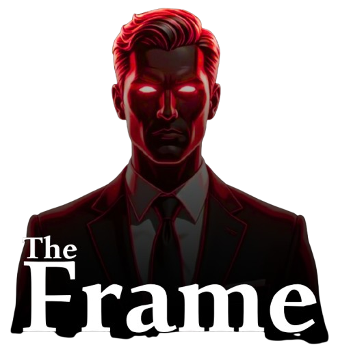

ليس هدفك أن تُعجب النساء. هدفك أن تبني رجلاً يستحق الإعجاب. مقالات في بناء الذات، القيمة الحقيقية، والانضباط بلا أعذار.
المعرفة وحدها لا تبني رجالاً. استخدم The Frame للتشخيص الرصين وتحويل المعرفة إلى خطة عمل.
مجاني للبدء. بدون بطاقة ائتمان.